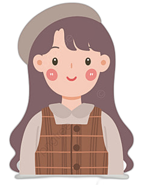

NAMA KHAS BALI
 Betharia Pranesti | Juli 07, 2022

Nama orang Bali memiliki aturan yang harus dipenuhi dan menjadikan sebuah identitas khas budaya masyarakat Bali. Bagi masyarakat Bali, pemberian nama kepada seseorang tidak boleh asal pilih karena mengikuti aturan budaya yang telah ada semenjak dahulu. Seperti halnya di daerah lain di Indonesia, masyarakat Bali juga memiliki budaya nama yang unik sebagai ciri khas bahwa orang tersebut berasal atau keturunan Bali.
Sejarah
Asal-usul penamaan orang-orang Bali yang menambahkan nama depannya, belum diketahui secara pasti mulai kapan pola penamaan tersebut mulai digunakan, namun beberapa sumber memperkirakan, sejarah penambahan nama depan tersebut mulai dari abad ke-14. Pada masa pemerintahan raja Gelgel Dalem Ketut Kresna Kepakisan yang dinobatkan Maha Patih Gajah Mada untuk memerintah Bali yang sebagai wilayah taklukan kerajaan Majapahit, namun tidak dirinci apakah nama-nama orang Bali tersebut berasal dari pengaruh Majapahit atau bukan, apalagi ada desa Bali Aga yang merupakan warisan budaya Bali kuno yang luput dari pengaruh kerajaan Majapahit.
Filosofi
Nama-nama khas Bali mulai Wayan, Made, Nyoman, Ketut, dan sebagainya. Semua nama itu ternyata ada artinya. Kita mulai dulu dengan sebutan I dan Ni pada nama-nama orang Bali. Huruf I di depan nama Wayan misalnya, adalah kata sandang yang bermakna laki-laki. Sementara kata sandang penanda kelamin perempuan adalah Ni. I dan Ni juga bermakna seorang lelaki dan wanita dari keluarga masyarakat kebanyakan, tidak berkasta atau biasa disebut orang jaba ika ia terlahir di keluarga penempa besi, maka orang Bali ini bernama Pande. Bila di depan Wayan gelarnya Ida Bagus, ia tentu terlahir di keluarga Brahmana. Ida Bagus berarti yang Tampan atau Terhormat. Jika saja ia digelari Anak Agung, maka ia lahir di keluarga bangsawan.
Funfact
Anak pertama diberi awalan Wayan, Putu, Gede. Contoh, Gede Ardika. Anak kedua diberi awalan Made, Nengah, Kadek. Contoh, Made Kendra. Anak ketiga diberi awalan Nyoman, Komang. Contoh, Nyoman Tresna. Anak keempat diberi awalan Ketut. Contoh, Ketut Nyana/ Jika suatu keluarga memiliki lebih dari empat anak, nama depan untuk anak kelima mengulang kembali sesuai urutan di atas. Ada juga sebagai pengingat diberi tambahan seperti balik atau tagel. Contoh, Wayan Balik Daru. Adapun untuk membedakan jenis kelamin, nama depan orang Bali akan ditambahkan awalan sesuai jenisnya. Awalan 'I' untuk anak laki laki, dan awalan 'Ni / Luh' untuk anak perempuan.